The guide to the prototype
How Hue Works
Try the prototypeOpen the presentation deck
This guide goes through each screen of Hue. For each part it says three things: what Daniel sees, what it does for him, and how Hue knows.
Daniel is a sales rep for printing inks in Singapore. Hue is the assistant on his phone, his tablet and his computer. The numbers in this guide come from the sample data of the prototype, with 100 customers. All amounts are in Singapore dollars.
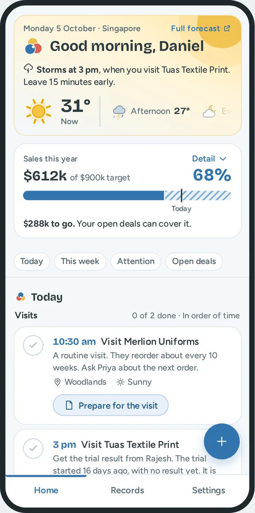
The words that Hue uses
Each word has one meaning in all screens.
| Word | Meaning |
|---|---|
| Visit | A meeting with a customer at a fixed time. |
| Follow up | A thing to do for a customer that is not a visit: a call, a message, a quote or a question about a payment. |
| Promise | A thing that Daniel said he will do, with a date. |
| No reply | The customer did not answer about a deal for longer than usual. |
| Not in touch | Daniel and the customer had no contact for 2 weeks or more. |
| Your move | The customer waits for Daniel. |
| Check and save | Daniel checks the fields that Hue filled in. Then he saves the note. |
| Notes to check | Notes that he kept for later. They are not in the record yet. |
One note goes to all screens
What Daniel gets. He records each fact one time. Then each screen is up to date.
Read the picture from the top.
- Daniel records a note. He talks, types, writes with a pen, or takes a photo of his notebook.
- Hue reads the note. It fills in the customer, what happened, the next step, the date, the products and the deal stage.
- Daniel checks the fields and saves. Nothing is saved before this.
- The note goes into the record of the customer.
- Each part of Home reads the record: the sales bar, Today, this week, the warnings and the open deals.
The path also goes back. A message, a call or a tick on Home is saved to the same record. This is the answer to the brief: fast action, with little time for notes.
Home: the weather for his visits
What Daniel gets. Before he leaves, he knows if the weather will delay a visit, and what to do about it.
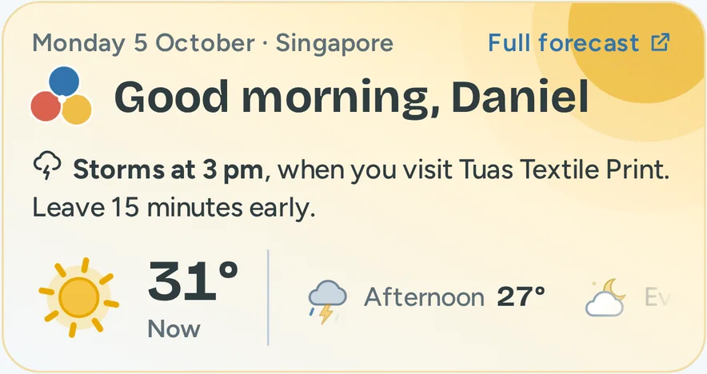
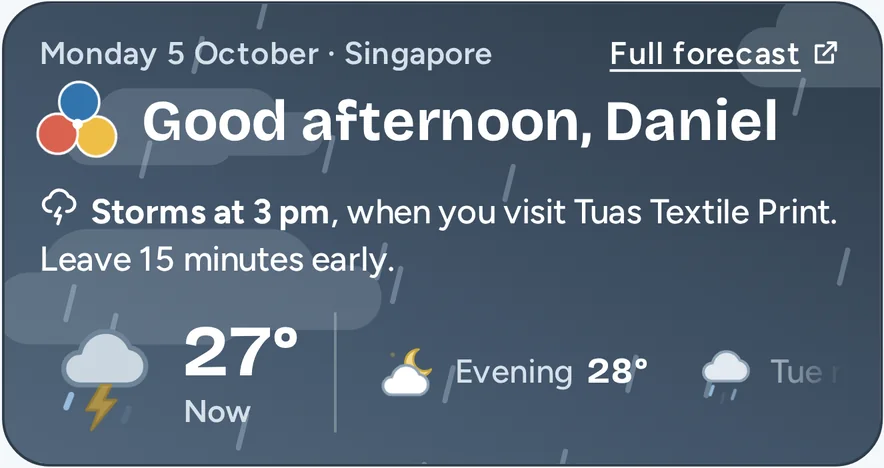
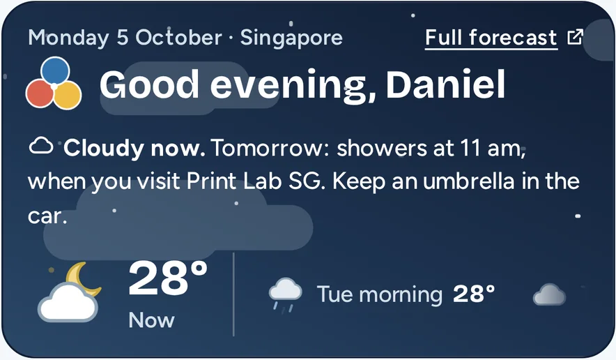
| What he sees | What it does for him | How Hue knows |
|---|---|---|
| One sentence: "Storms at 3 pm, when you visit Tuas Textile Print. Leave 15 minutes early." | He knows which visit the weather changes, and he gets one instruction. | Hue compares the time of each visit that is still to come with the forecast for that part of the day. Storms come before showers. |
| A large picture and a temperature, with "Now" | He sees the weather at this moment in one look. | The forecast for the current part of the day. |
| The colour of the panel | He feels the weather before he reads. Yellow is sun. Grey is rain. Dark blue is night. | The same weather as the large picture. |
| A row with the next parts of the day | He sees how the day continues. He slides the row to see tomorrow. | The forecast gives the morning, the afternoon and the evening. |
| "Full forecast" | More detail when he needs it. | A link to the national weather service. |
The panel follows the clock. A sentence about a visit that is past is of no use. When no visit is left today, Hue looks at the visits of tomorrow. If no visit is in the rain, the sentence says "No rain at your visits today".
The same warning shows on the visit in Today. So he sees it a second time, at the place where he plans the drive.
To see other weather, use "Sample weather" at the top of the prototype page.
Home: sales this year
What Daniel gets. He knows if he is on track for his target. He does not open a report.
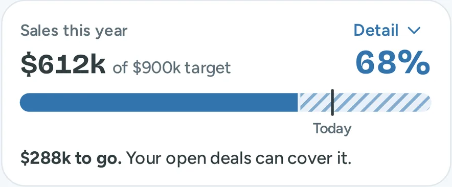
| What he sees | What it does for him | How Hue knows |
|---|---|---|
| $612k of $900k target, and 68% | His result and his target in one line. | The total of all deals with the stage Won. The company gives the target. |
| The solid bar | Progress in one look. | The same 68%. |
| The striped bar | He sees if his open deals can fill the gap. | The total of his open deals, $811k in 52 deals. |
| The line with "Today", at 76% | He sees if he is ahead or behind. | Day 278 of 365. It assumes equal sales in each month. |
| "$288k to go. Your open deals can cover it." | One honest sentence. It does not say "safe" when it is not. | 900 minus 612 is 288. The open deals are larger than the gap. |
| "Closing Best Printing Pte Ltd ($86k) takes you to 78%." | It connects the number to one action of today. | The largest deal that waits for him. |
| "Detail" | The phone shows the short version. One tap opens the other lines. | His choice. |
Today: visits
What Daniel gets. He sees the fixed points of his day, and he arrives at each visit with a goal.
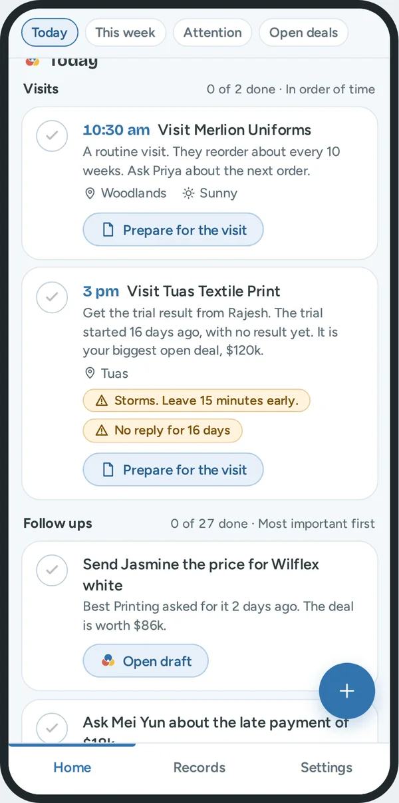
Today has two lists. The visits come first, because a visit has a fixed time and the other work must fit around it.
| What he sees | What it does for him | How Hue knows |
|---|---|---|
| The time and the customer: "3 pm Visit Tuas Textile Print" | He sees when he must be where. | His calendar. |
| The reason: "Get the trial result from Rajesh. The trial started 16 days ago, with no result yet. It is your biggest open deal, $120k." | He knows what to ask. | The open deal and the last notes of that customer. |
| The area, with a pin | He can plan the drive. | The postal code in the address. |
| "Storms. Leave 15 minutes early." | He leaves in time. | The forecast for the time of the visit. Dry weather is plain text. Only a warning is a label. |
| "No reply for 16 days" | He knows that this deal is at risk. | The rule for no reply. See "Needs attention". |
| The circle | He ticks the visit when it is done. | His tap. A saved note for that customer also ticks it. |
| "Prepare for the visit" | One tap to read the history before he goes in. | It opens the record. After the time of the visit, the button changes to "Add a note about the visit". |
A follow up for a customer that he visits today is part of the visit. So he does not see the same customer two times.
Today: follow ups
What Daniel gets. He does not decide where to start. The first follow up is the one where the most money and the most time are at risk. Each follow up gives its reason, so he can disagree.
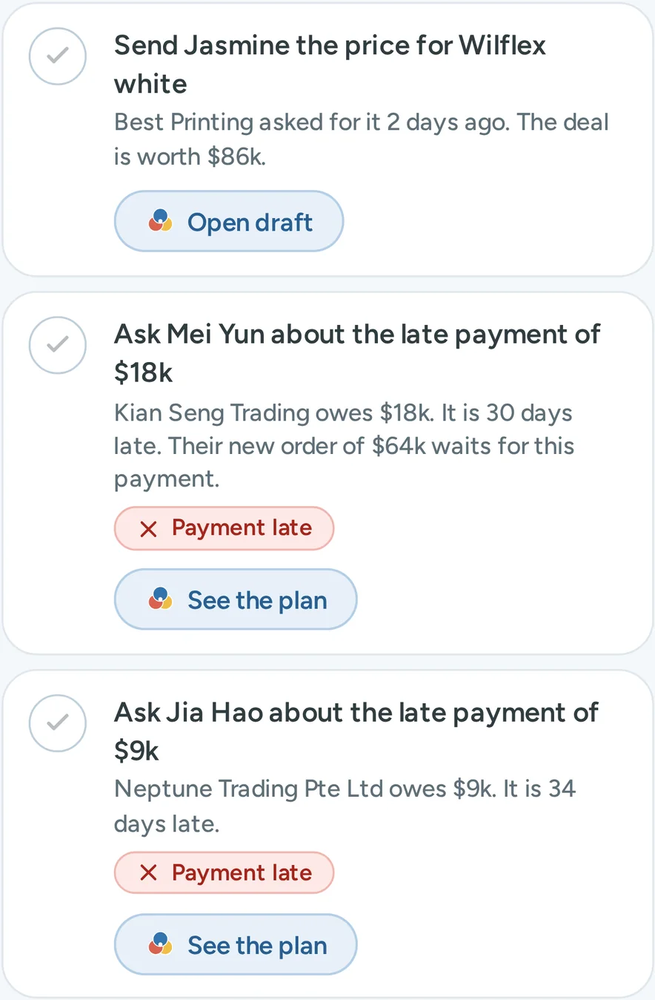
What is a follow up. A call, a message, a quote or a question about a payment. Hue makes one follow up for a customer when one of these is true:
- Daniel made a promise that is still open.
- The customer waits for his reply.
- The customer did not reply for longer than usual.
- A payment is late.
What he sees. Three follow ups show. "Show 24 more" opens the others. The count "0 of 27 done" includes the ones that are hidden, so the number is honest.
How Hue makes the order. Hue gives points to each follow up. The follow up with the most points is first. Daniel does not see the points. He sees the reason in words. He can disagree with a sentence. He cannot disagree with a number.
| Part of the rule | What it is | How Hue knows |
|---|---|---|
| Value | The worth of the deal for one year, in thousands of dollars | He types it when he adds the deal. |
| Chance | New 20%, Sample 40%, Trial 60%, Quote 80% | The deal stage. A later stage is nearer to an order. |
| Waiting: a promise | 50 points if a promise is due today or is late | The promise list of the customer. |
| Waiting: his move | 10 points for each day that the customer waits for him, to a maximum of 30 | The days since the last contact. |
| Waiting: no reply | 5 points for each day after the usual wait, to a maximum of 30 | The days since the last contact, and the usual wait for that stage. |
| A late payment | 40 points, plus the late amount in thousands, plus 1 point for each day that it is late, to a maximum of 30 | The payment status of the customer. |
For a deal, the points are value × chance + waiting. A late payment has its own rule, because money that a customer owes comes before most new deals.
The first follow ups of the sample day, with the reason that Daniel reads.
| Rank | Follow up | The reason that Daniel reads | How the points add up | Points |
|---|---|---|---|---|
| 1 | Send Jasmine the price for Wilflex white | "Best Printing asked for it 2 days ago. The deal is worth $86k." | 86 × 80% is 69. A promise for today adds 50. His move for 2 days adds 20. | 139 |
| 2 | Ask Mei Yun about the late payment of $18k | "Kian Seng Trading owes $18k. It is 30 days late. Their new order of $64k waits for this payment." | 40, plus 18 for the amount, plus 30 for the days. | 88 |
| 3 | Ask Jia Hao about the late payment of $9k | "Neptune Trading Pte Ltd owes $9k. It is 34 days late." | 40, plus 9, plus 30, the maximum for the days. | 79 |
| 4 | Ask Jun Jie about the late payment of $12k | "Pagoda Apparel Pte Ltd owes $12k. It is 25 days late." | 40, plus 12, plus 25. | 77 |
| 8 | Ask Mei Ling about the $48k quote | "You sent the quote to Ace Tees 9 days ago. She did not reply yet." | 48 × 80% is 38. No reply for 4 days longer than the usual 5 adds 20. | 58 |
Hue makes the order one time, at the start of the day. So the list does not jump while he works. A promise for today that he adds during the day goes to the top.
Done. He taps the circle when a follow up is done. A done item stays in the list until the next morning, and a second tap undoes it. When he saves a note for that customer, Hue ticks the follow up by itself. The row then says "Done. Hue ticked it when you saved your note."
Home: notes to check, and kept forms
What Daniel gets. An interruption does not cost him his work.
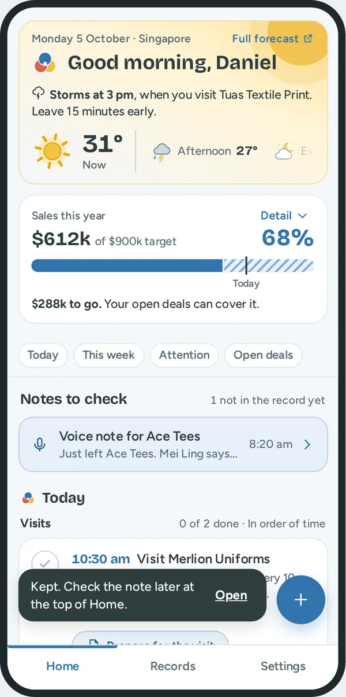
| What he sees | What it does for him | How it works |
|---|---|---|
| "Notes to check", with a row for each note | A note that he recorded in a hurry is not lost, and he does not forget it. | He tapped "Check later". The note stays here until he opens it, checks the fields and saves. The count says how many are not in the record yet. |
| A pale blue row for a kept form | He can finish a form that a call interrupted. | When a form has entries, each way to close it asks "Leave this form?" He can keep the entries, discard them, or stay. |
Home: later this week, needs attention, open deals
What Daniel gets. He sees what comes next, who needs him, and where the money waits. Each list is short first. One button shows the others.
Later this week
| What he sees | What it does for him | How Hue knows |
|---|---|---|
| Each day from tomorrow, with its visits | He sees the week with no second app. | His calendar. |
| Rows with "Promise" | He does not forget small promises. | Hue adds a promise when a note has a next step with a date. |
| "Show 9 more on Fri" | The list stays short. | A day shows three rows first. |
Needs attention
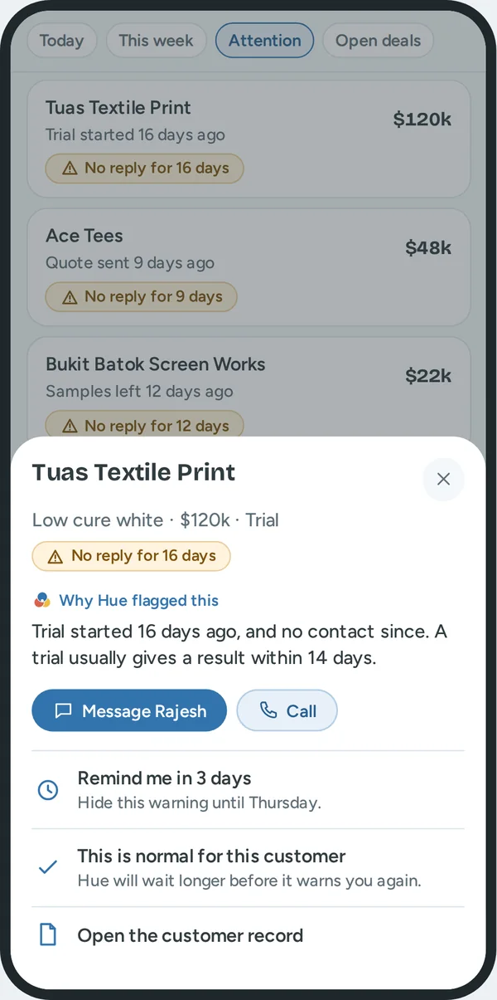
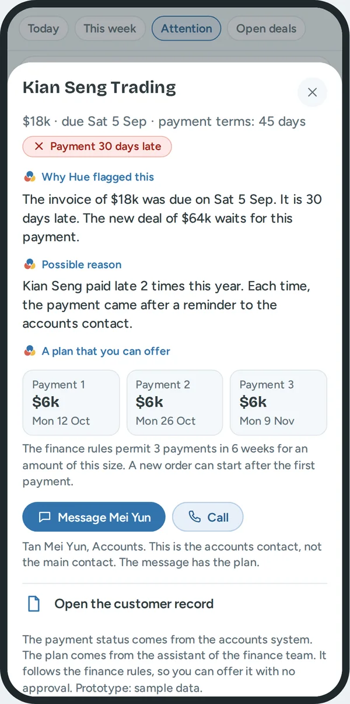
| What he sees | What it does for him | How Hue knows |
|---|---|---|
| "No reply for 16 days" | A deal is not lost in silence. | The days since the last contact are more than the usual wait: 3 days for a new deal, 7 for samples, 14 for a trial, 5 for a quote. |
| "Why Hue flagged this" | He can judge the warning. "Trial started 16 days ago, and no contact since. A trial usually gives a result within 14 days." | The stage, the days, and the usual wait. |
| Message, Call | One tap to act. The message is ready. | Hue writes a first message from his notes. He changes it and sends it. |
| "Remind me in 3 days" | He can wait without forgetting. | The warning hides for 3 days. |
| "This is normal for this customer" | Hue does not nag him. | Hue waits longer for this deal the next time. |
| "Payment late" | He asks about the money before he takes a new order. | The payment status of the customer. In the real tool it comes from the accounts system. |
| "A plan that you can offer" | He can solve the problem in the same call, with no approval. | The plan comes from the assistant of the finance team. It follows the finance rules. |
| The amount on each row | The largest risk is first. | The list sorts by the worth of the deal, or by the late amount. |
Open deals
| What he sees | What it does for him | How Hue knows |
|---|---|---|
| "52 deals · $811k" | The size of his pipeline in one line. | All deals that are not won or lost. |
| Four bars: New, Sample, Trial, Quote | He sees where the money waits. | The total for each stage. A tap on a stage filters the list. |
| "Biggest first" | The important deals are on top. | The five largest open deals. |
| "See all 52 in Records" | Home stays short. | It opens Records with the filter "Open deals". |
Record a note
What Daniel gets. He records a note in seconds, in the way that fits the moment. He does not fill in a form.
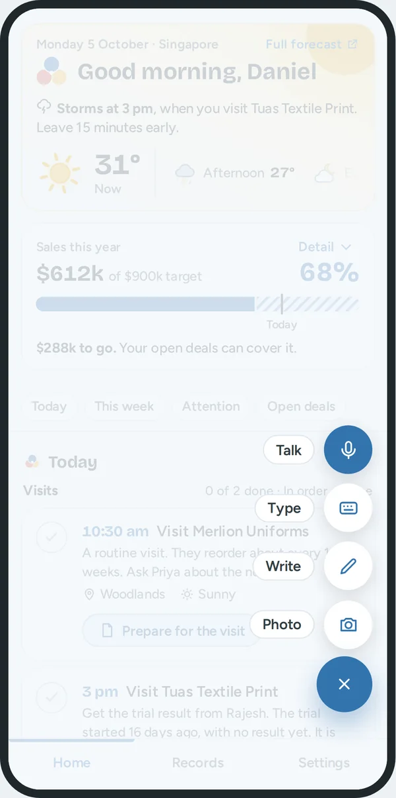
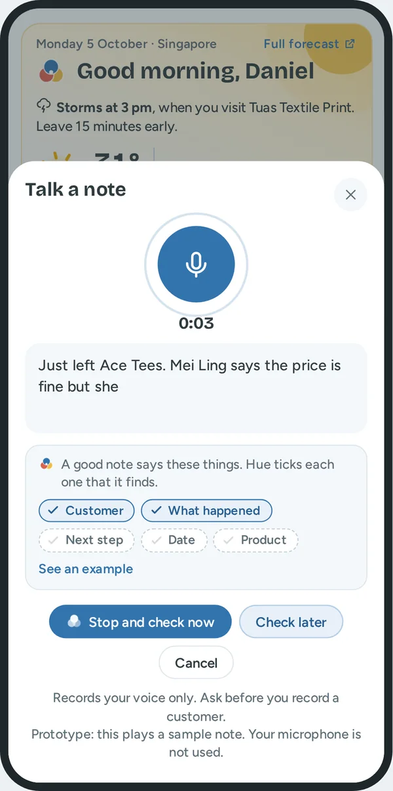
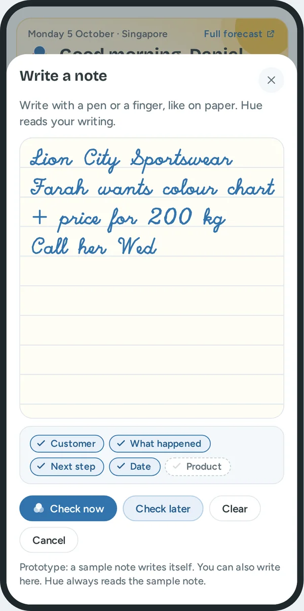
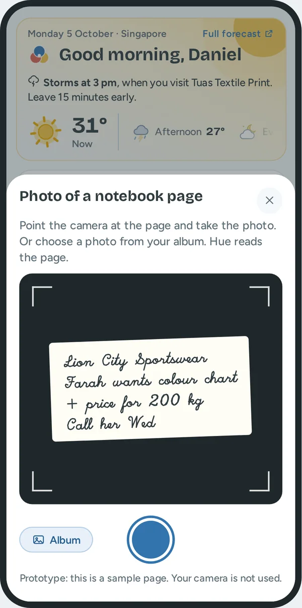
| What he sees | What it does for him | How it works |
|---|---|---|
| The round button | One place for all notes, near his thumb. | A tap opens Talk, Type, Write and Photo. Settings can move the button to the left. |
| Talk | No typing after a visit. | Speech becomes text. Hue records his voice only, and the screen says so. |
| Type | Fast in a silent place. | He types the note his way. He does not choose fields. |
| Write | Polite in a meeting. | He writes with a pen or a finger. Handwriting becomes text. |
| Photo | Notes on paper also get into the record. | He takes a photo of the page, or chooses one from his album. |
| "New note" on a computer, or the N key | Fast at a desk. | A small menu: Type a note, Talk a note, Attach a photo. |
| "A good note says these things", with five ticks | He learns what to say, with no training. | The ticks are Customer, What happened, Next step, Date and Product. Hue ticks each one when it finds it in his words. "See an example" shows a full note. |
| "Check now" and "Check later" | He decides when to check. | "Check now" opens Check and save. "Check later" keeps the note at the top of Home. |
Check and save
What Daniel gets. Hue does the typing. Daniel stays in control. He checks the fields, and nothing goes to the record before he taps Save.
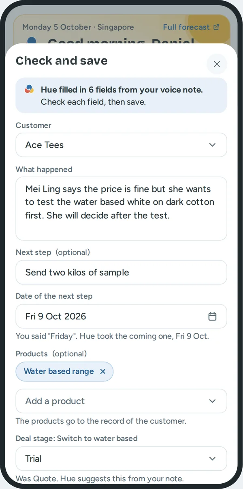
One line at the top says what Hue did: "Hue filled in 6 fields from your voice note. Check each field, then save." So he knows that these words are not all his.
| Field | What it does for him | How Hue knows |
|---|---|---|
| Customer | He does not search for the record. | A company name or a contact name in the note. If Hue finds none, the field asks him to choose. A wrong guess is not saved. |
| What happened | A clean history. | The sentences of the note that are not the next step. |
| Next step | Nothing is forgotten. It becomes a promise. | The first sentence with an action and a day: send, call, quote, visit. |
| Date of the next step | He does not calculate dates. | The day word in that sentence. Below the field, Hue gives its reason: "You said Friday. Hue took the coming one, Fri 9 Oct." |
| Products | He knows later what each customer asked about. | Product names in the note. He can remove one or add one. |
| Deal stage | The pipeline is correct with no extra work. | Words in the note. "Test" gives Trial. Below the field: "Was Quote. Hue suggests this from your note." |
| "Your original words" | He can compare. That is why he can trust Hue. | The note as he said it. Hue keeps it. |
| "Save to record", "Check later", "Cancel" | He has the last word. | Nothing is saved before his tap. |
What changes after Save.
- The timeline of the customer gets the note.
- The next step becomes a promise with its date. It shows in "Later this week".
- The deal gets the new stage. The days since the last contact go back to 0, so a "No reply" warning stops.
- The products go into the record.
- A visit or a follow up for this customer in Today is ticked.
The switch "Fill in the fields from my notes" in Settings stops this. Then each note is saved as he wrote it.
Records: find a customer
What Daniel gets. He finds one customer in seconds. He can also see a group: the customers that wait for him, that do not reply, or that he lost touch with.
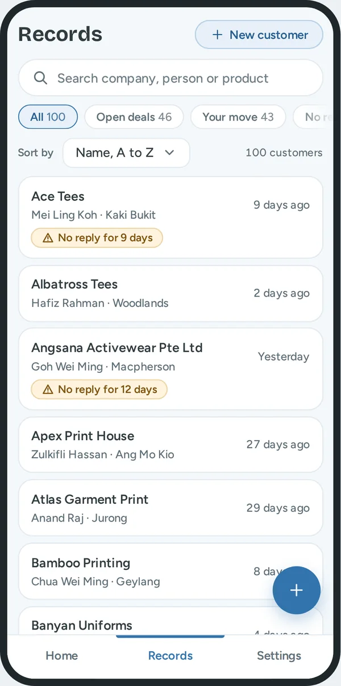
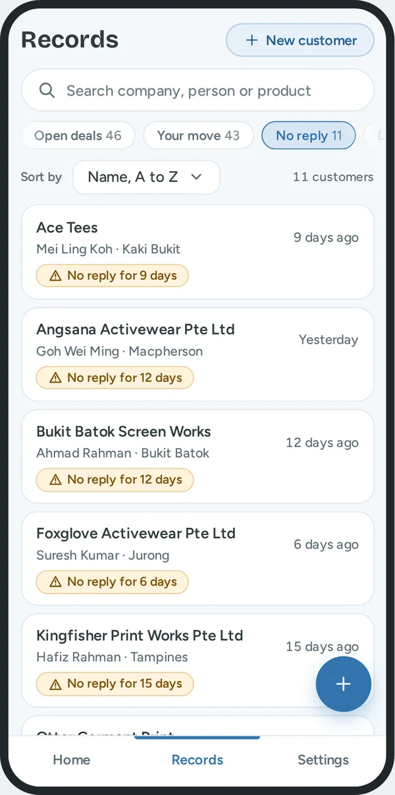
| What he sees | What it does for him | How Hue knows |
|---|---|---|
| Search | The fastest way to one customer. | It looks at the company, the person, the product and the area. |
| Filter: Open deals | His pipeline. A second row chooses one stage. | The customer has a deal that is not won or lost. |
| Filter: Your move | His own work list. | A deal needs his reply, or he has an open promise. |
| Filter: No reply | Deals that can be lost in silence. | The rule for no reply. |
| Filter: Late payment | Money to collect. | The payment status. |
| Filter: Not in touch | Customers that he can lose. A second row chooses 2 weeks, 3 weeks, or 4 weeks or more. | No call, message, visit or note in that time. |
| The number in each filter | He sees the size before he taps. | A count, with the search applied. |
| Sort by | The order that fits the job. | Name, biggest deals, longest since contact, or most recent contact. |
| A row: name, contact, area, "9 days ago" and a label | He knows the person and the condition before he opens the record. | The record. The label is "No reply" or "Payment late". No label means up to date. |
| "New customer" | A new record in seconds. | Only the company name is necessary. A warning shows if the name is already in the records. |
A phone and a tablet show 20 rows, then "Show 20 more". A computer shows a table with pages of 25.
The customer record
What Daniel gets. All that he knows about a customer is in one place. He reads it in one minute before a visit. All other screens read from it.
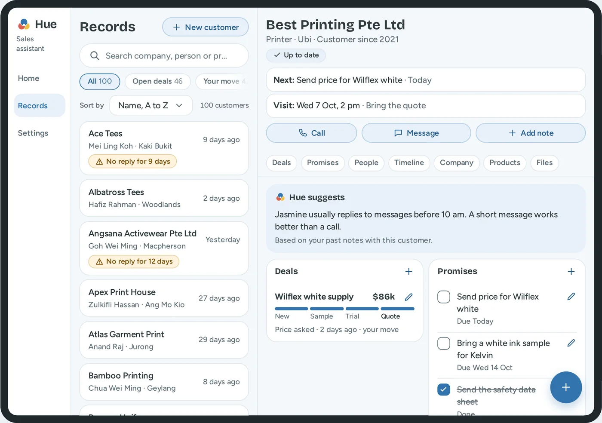
| What he sees | What it does for him | How Hue knows |
|---|---|---|
| The name, the type, the area, "Customer since" | He confirms that he is in the correct record. | The company details. |
| The status label | The condition of the customer in one look. | Up to date, No reply, or Payment late. |
| "Next:" and "Visit:" | The one thing to know before a call. | The first open promise, and the next visit. |
| Call, Message, Add note | Two taps to act. | The main contact. A message has a first version from Hue. |
| "Hue suggests" | A reminder of what works with this person. "Jasmine usually replies to messages before 10 am." | His past notes with this customer. |
| Deals | The money view: the worth, the stage, the last event, and who must act. | He adds a deal. A note can change its stage. |
| Promises | Small promises are kept. | A next step from a note, or "Add". |
| People | He knows who decides. | He adds them. The first is the main contact. |
| Timeline | The full history. The newest is first. | Each saved note, call, message and visit. |
| Company | The facts that change slowly: address, payment terms, payment status, last contact. | He types a part of the address and chooses a suggestion. |
| Products, Files | He knows what to offer. The last quote is easy to find. | "Add", or product names in his notes. |
One rule for add and edit. The heading of each list has a plus. It adds one item. Each item that he can change has a pencil. He can change what he wrote: a visit, a call, a note. He cannot change a message or an email, because the timeline must be a true history. A lock shows this, and a tap on the lock says how to correct it: add a note. A deal is not removed. When the customer says no, he sets the stage to Lost, and the history stays.
Forms
What Daniel gets. He types as little as possible. An error is found at once, and not three weeks later when he calls a wrong number.
- Label. Each field has a label above it. A field that can stay empty says "(optional)".
- Example. An empty field shows an example in grey, such as "Example: 9123 4567".
- Keyboard. A phone field and an amount field open the number keyboard.
- Error. Red text with a cross below the field. It says what is wrong and how to correct it.
- Menu and date. They use the controls of the tool, so they look the same on each device. In the calendar, a tap on the month or the year changes it. Saturday and Sunday have a grey ground. "Today" and "Tomorrow" are one tap.
- Leave a form. A form with entries does not close at once. He can keep the entries and finish later.
| Field | Example | What the tool does for him |
|---|---|---|
| Company name | Best Printing Pte Ltd | It warns him if the company is already in his records. |
| Phone | 9123 4567 | Letters cannot be typed. "91234567" becomes "9123 4567". |
| jasmine@company.com | It changes capital letters to small letters. | |
| Amount | 48,000 | It shows "$" in the field and adds the commas. The smallest amount is $1,000. |
| Date | The calendar | Hue fills the date from the note. Only today or a later date is permitted. |
| Address | 408564 or Ubi Crescent | It shows matching addresses and a map with a pin. |
| Message | A first version from Hue | A message cannot go out with "[price]" in it. |
Two rules come from the job. A deal needs an amount, because the order of the follow ups uses it. A next step needs a date, because a next step with no date is how a deal gets lost.
Buttons
What Daniel gets. His eye goes to one button on each screen.
| Level | Look | Examples |
|---|---|---|
| 1 | Dark blue, white text. One for each screen. | The round button, "Save to record", "Send" |
| 2 | Light blue with a thin blue line | "Open draft", "Prepare for the visit", "Check later" |
| 3 | Text only | "Show 24 more", "See all 52 in Records" |
"Cancel" has a thin line and dark text. "Remove" has a red line and asks for a second tap.
A new user
What Daniel gets. On his first day, each empty screen tells him what will show there and gives one next step.
Select "0 customers" at the top of the prototype page to see this.
| Part | What a new user sees |
|---|---|
| Sales this year | "$0 of $900k target" and "No sales yet. Add your first deal to start." |
| Today | The Hue logo, "Nothing for today yet", and the button "New customer" |
| Needs attention, Open deals | One short line each. No buttons, so the page is not crowded. |
| Records | "No customers yet. Add your first customer. Only the company name is necessary." |
| The round button | It opens "New customer" and says why: a note needs a customer. |
Settings
What Daniel gets. He can read the screen in sunlight, use it with one hand, and decide what Hue does for him. Each change works at once.
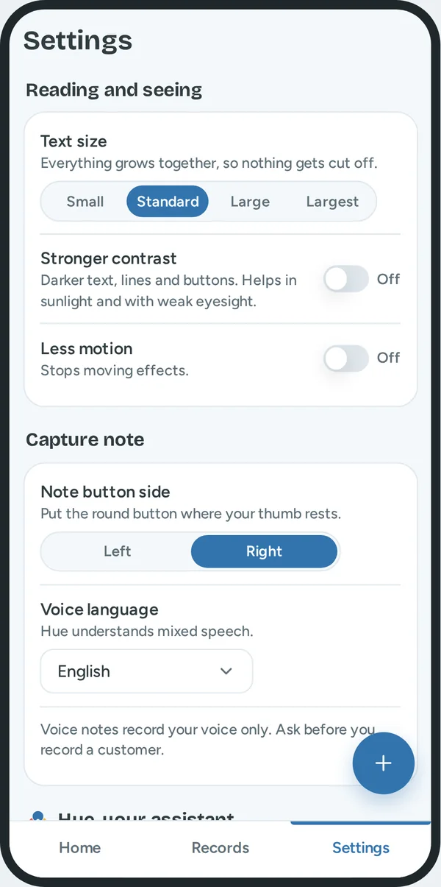
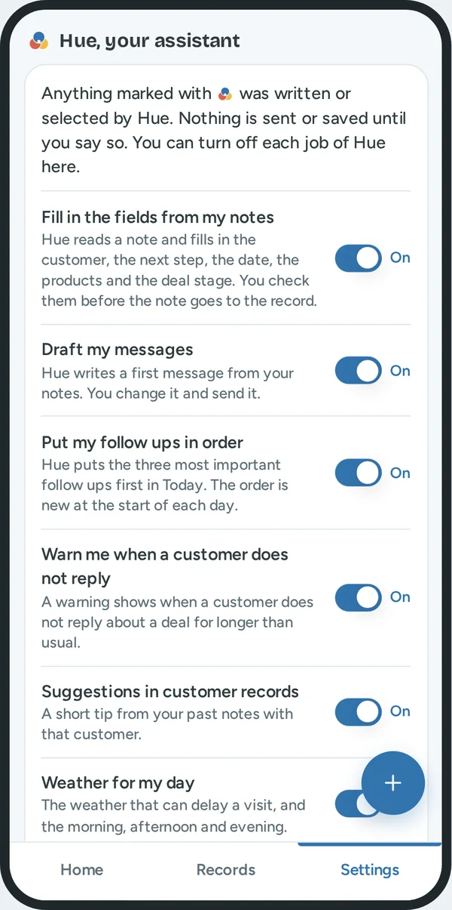
| Setting | What it does for him |
|---|---|
| Text size | Four sizes. All text and buttons grow together, so nothing is cut off. |
| Stronger contrast | Darker text, lines and buttons. It helps in sunlight and with weak eyesight. |
| Less motion | The moving effects stop. The tool also obeys the same setting of the phone. |
| Note button side | The round button moves to the left or the right thumb. |
| Voice language | English, English and Mandarin, or English and Malay. Reps in Singapore mix languages in one sentence. |
Hue, your assistant. This group is the full list of what Hue does. Each job has one switch. All switches start on.
| Switch | When it is on | When it is off |
|---|---|---|
| Fill in the fields from my notes | Hue reads a note and fills in the fields. He checks them. | The note is saved as he wrote it. |
| Draft my messages | Hue writes a first message from his notes. | The message box is empty. |
| Put my follow ups in order | The three most important follow ups are first. | The follow ups are in order of customer name. |
| Warn me when a customer does not reply | "No reply" labels show. | No "No reply" labels. Late payments still show. |
| Suggestions in customer records | One short tip from his past notes. | The tip is not shown. |
| Weather for my day | The weather panel, and the warning on a visit. | No weather. The visits stay. |
Why one switch for each job. Trust comes from control. A rep who can stop one job of Hue keeps the others. A rep who has only one large switch turns off everything after one bad result.
What Hue never does. Hue does not send a message. Hue does not save a note. Hue does not change a deal. Daniel must say yes each time. So there is no switch for these.
Help. "Guide" explains each word, filter and label inside the tool. "Tour" shows the main features in one minute. It starts by itself the first time.
What is real, and what is a sample
The prototype is a model. It shows how the tool works. It is not connected to a real system. All people, companies, deals and amounts are made up. The date in the prototype is always Monday 5 October 2026.
These parts work for real.
| Part | What it does |
|---|---|
| The order of the follow ups | The rule calculates it from the data. Change a deal and the order changes. |
| The warnings for no reply | The rule compares the days with the usual wait for that stage. |
| Hue reads a typed note | Rules that I wrote find the customer, the date, the next step, the products and the stage. |
| Search, filters and sort | They work on all 100 records. |
| Add and change | Customers, people, deals, promises and notes. The sales bar and the lists update at once. |
| Settings | Each setting and each switch changes the screens at once. |
These parts are a sample.
| Part | What the prototype does | What the real tool needs |
|---|---|---|
| Talk | It plays a sample sentence. | Speech to text that understands mixed languages. |
| Write and Photo | A sample note writes itself. Hue always reads the sample note. | Handwriting to text, and text from a picture. |
| Hue reads a note | Simple word rules. | A language model, with the same reason lines below the fields. |
| Message and call | Nothing leaves the prototype. | A link to the message and phone apps. |
| Payment status and payment plan | Sample data. | A link to the accounts system, and to the assistant of the finance team. |
| Weather | Four sample days. | A weather service for each part of the day and for the area of each visit. |
| Visits | A sample list. | A link to his calendar. |
| Saved changes | They are lost when the page loads again. | A database. |
What I assumed, and must test with real reps.
- The accounts system can give the payment status of each customer.
- The finance team has rules for payment plans, and a rep can offer a plan that follows them.
- The usual wait is 3, 7, 14 and 5 days for the four stages. These are first values. A manager can change them, and Hue learns the usual wait of each customer.
- The chance for each stage is 20, 40, 60 and 80 percent.
- The points for waiting, and the 40 points for a late payment.
- Sales are equal in each month. Real ink sales can have busy and slow seasons.
The first test must check one thing. Do real reps agree with the three follow ups that Hue puts first? If they do not, these numbers change.